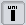

Getting Oris up and running
First of all, let's learn how to get Oris up and running.
Once you have Oris downloaded (link here), head to the download folder and unzip the Oris archive you just downloaded.
Then, you can open the folder created and run Oris by simply running either run.bat, if you are on Windows, or run.sh, if you are on Linux or Mac.
Remember! Be sure to have the correct Java version installed, or Oris won't run.
Simple network creation
Now that we have Oris working and running we can start learning how to create our very first Petri Net with Oris following a simple example. The example Petri Net we're going to build will model a simple transmission with timeout on a lossy channel.
The very first step is to create a new empty net by clicking the button  from the toolbar. Alternatively, you can click File → New, from the menu, or use the shortcut Ctrl+N.
from the toolbar. Alternatively, you can click File → New, from the menu, or use the shortcut Ctrl+N.
Let's start by adding a new place: to add a new place just click on the button and then on a random position on the canvas. You can see a new place will spawn, as shown below:

If we now double click on the place we just created, we can specify its name and the number of tokens in that place in the initial marking. Let's call it ready and give it one token, as shown below:
Now let's click OK to make the changes permanent.
Protip: If you select the button, you can drag the place's name for a better readability.
With the same method we've just seen, let's add four more places: sent, received and timedOut, with zero tokens, and sending, with one. For more clarity, the relative position of the places should be as shown below:
Protip 2: When you drag an element, Oris will show some helpful alignment lines.
Now that we have all the places we need set, let's add some transition.
The first transition we're gonna add will be a uniformely distributed transition, also called UNI: to create our new UNI transition let's select the  button and click between the places ready and sent. Then, let's double click on the newly created transition to customize it's parameters as follows:

With these parameters we're basically telling the send transition to have a uniform probability distribution between 1 and 2 and to be able to fire only if the place timedOut has no marking (i.e. we want to send a message only if we've not yet timed out). Finally, selecting the , we can create an arc between a place and a transition (or viceversa) by dragging the arc from the starting element to the destination element: in this case let's create an arc from ready to send and another one from send to sent.
The result should be as follows:
If you're wondering what does that little e on top of the transition means, it stands for enabling function, in this case it refers to the condition timedOut==0 we included in the transition.
Let's add three more transitions now.
The first will be a deterministiclally distributed transition (also called DET, added with the button). Let's call this one timeout and give it a value (Stochastic properties tab) of 5. This transition should be place between sending and timedOut, with an arc from sending to timeout and another one from timeout to timedOut.
Then, we want to add an immediate transition (a.k.a. IMM, button) just above the send transition. We'll call this one lost and will have an incoming arc from sent and an outgoing one towards ready.
Protip 3: If you double-click on an arc, you can create joint nodes, for a better organization.
Finally, we need a last IMM transition, between sent and received. This last transition, to be called success, should have two incoming arcs, one from sent and one from sending, and an outgoing one, towards received.
If done properly, the final result should be as follows:
The Petri Net is now completed and is ready to be used for various analysis.
Remember to save the Petri Net before closing, by clicking the button, if you want to reuse the net later. This process will generate a file in XPN format that contains the Petri Net description.
Some example PNs
You can download and open the following example PNs in Oris to experiment a bit around and learn how to do different kinds of analysis.
Transmission with Timeout
Simple trasmission on a lossy channel with a timeout mechanism.
Preemptive Server Queue
Queue with two customers and one server with preemptive repeat different policy.
Software Rejuvenation
Software system subject to aging with a maintenance mechanism (rejuvenation).
Simple GSPN
A simple example of a Generalized Stochastic Petri Net (i.e. only IMMs and EXPs).
Software Rejuvenation 2
Another, more complex, example of Software Rejuvenation, taken from a publication of Trivedi et al.
Fischer's protocol
Fischer's mutual exclusion protocol with three processes.
Regenerative transient analysis
One of the most useful analysis that can be conducted on a Petri Net is the regenerative transient analysis.
The transient analysis is the analysis of the probabilities of being in a certain state at a certain moment in time, given that the process started from another given state. This analysis generates a matrix, with time as the first dimension and the possible arrival states, starting from the initial marking, as second dimension.
Regenerative transient analysis indicates the transient analysis done on a generic Markov Regenerative Process (MPR). An MRP is a sthocastic process that, sooner or later, will certainly reach a regeneration (i.e. a moment in time where the past history of the process adds no information to the future probabilities).
In this section we'll analyze the "Trasmission with Timeout" model we build in the previous section. If you don't have the model open in Oris (or you didn't save it) you can download it from the examples (link) and open it again.
Once we have the model back up on the main pane, we can start a new regenerative transient analysis by clicking the button. We'll notice a new panel, like the one below, with several parameter fields:
Let's explain briefly the main parameters:
- Time limit: represent the temporal upper bound of the transient analysis, meaning that the analysis will run until the time limit specified is reached (or when a stop condition has occurred, if specified);
- Allowed error: specifies the maximum error we allow the results to have: higher allowed errors means faster analysis, but also more inaccurate results;
- Discretization step: since the analysis cannot be done in a continuous way, it have to be done on certain points of time: how close to each other these points will be is decided by the discretization step, where a smaller step means that more points will be calculated, which involves longer analysis time but more accurate result;
- Extended regenerations: if checked it enables the transient analysis to detect extended regenerations, i.e. when a DET transition fires and the rest of the GEN (generic) transitions are either reset or enabled for a deterministic time;
- Stop condition (optional): a boolean expression to tell the engine to stop the analysis prematurely (i.e. before the time limit) when it's evaluated to true;
- Rewards (optional): a series of expressions that will be shown in the results of the analysys; if left blank, it's composed by all the reachable tangible states by default.
For this example, let's choose a Time limit of 6, since the timeout transition is a DET that will fire at time 5, for sure nothing will happen after that. Being this a simple example, the analysis is going to be pretty fast, so we can ask an error of 0 without worrying too much. The Discretization step should be small enough to have the results a bit smooth and more precise: a value of 0.001 should be sufficient. In this case, wether we include the extended regenerations or not won't make any difference, so let's leave it unchecked.
As you click OK, you'll see a new panel open and the new analysis running. When the analysis is completed (shouldn't take long) you'll have on screen something like that:

Let's talk about the various buttons we have on this panel: first of all, you can modify the analysis by clicking on the button, change the values of the parameters you want to update, click OK and finally relaunch the analysis with the new values with the ; the button is needed if, after a completed analysis, we want to modify the model and relaunch the analysis: in fact, if we just modify the model and click , the analysis will be done on the unmodified version of the model, so in order to force the analysis engine to consider the new changes we need first to click on the button; by clicking on the you can view the log of the analysis, where are logged all the main operations executed or, in case of errors, the possible nature and cause of such error(s); finally, the  button is used to show the results of the analysis, in both a numerical and a graphical way.
button is used to show the results of the analysis, in both a numerical and a graphical way.
Let's click on the button and try to explain the results panel a bit more in detail.
The panel that will open by default will be the Data panel, where the results are shown in numerical form. In the Data panel we have one row for each time instant, in which a result is calculated, and one column for each reachable marking. The value inside each cell will then represent the chance to be in the marking of that column after the time of that row given that we started at time 0 in the first marking of the model. For example, let's consider the fifth cell from the top and second from the left: this is telling us that given that we started from the marking ready sending at time 0, the probability that, after time 0.004, the model is still in that same marking (ready sending) is 1. This is easy to understand because at the beginning only the transitions send and timeout are enabled and none of them can fire before time 1 (actually, timeout won't fire even before time 5) so the model is bound to remain in the same marking until, at least, time 1. Clearly each row represent a probability distribution, meaning that the values in each row have to sum exactly 1.
The Graph panel shows instead the graph built on top of the numerical results shown in the Data panel. More precisely, it shows a plot with several curves, where each curves correspond to a different column in the solution. These curves will vary depending on time, on the X axis, and will show the corresponding probability value for that instant in time on the Y axis.
Protip 4: You can hover on a curve to know which curve corresponds to which column.
The next, and last step, is actually the more delicate and most important of the entire analysis: the interpretation of the results. Let's give an example using the graph of the results. First of all, since we didn't specify any reward, the curves shown here represent every reachable tangible state, in this case ready sending, received and ready timedOut. We notice that until time 1, the probability of being in the marking ready sending is 1, while for the other two is 0, for what we discussed earlier with the numerical results. From time 1 to 2 we see that the probability of being in ready sending decreases linearly, while the probability of being in the marking received does the exact opposite: that's because, being send a UNI between 1 and 2, in that timeframe there is an equally distributed chance of actually sending and finishing in the absorbing state received. At time 2 the two curves cross each other and after that, they increase and decrease nonlinearly, as that would involve that a message has been lost and another send has to be attempted (i.e. waiting a deterministic time of 1 and then another UNI distribution). At time 5, finally, the timeout mechanism triggers, meaning that the change of being in a state where it's trying to send drops to 0 (ready sending) and that the probability of having succesfully received the message cannot increas any further. We can also notice that the probability of being in the marking ready timedOut raises at exactly the last value of ready sending before the drop and then proceeds to remain constant: that's interpretable as the fact that if the process finds itself in ready sending (and not received) at time 5, then the timeout is triggered. As a last observation, we can notice that no marking involving the place sent is present and that's because those markings are all vanishng markings since all the enabled transitions are IMM transitions.
GSPN analysis
Let's have a look now at the GSPN analysis, another feature offered by Oris.
The GSPN analysis is an analysis just like the one we just saw, but for GSPN networks. A GSPN (Generalized Stochastic Petri Net) is a Petri Net with only immediate and exponential transitions.
Let's use, for this example, the net "Simple GSPN" from the examples (link). Once you have it downloaded and open in Oris, you can click on the button. The various parameters in the analysis panel are exactly the same the ones from the regenerative analysis we already examined, with the only exception of Extended regenerations being replaced by Compute steady state: while extended regenerations are not supported by the GSPN analysis, by checking this new option we can have the steady-state probabilities (i.e. as time goes to infinity) of the model calculated as a bonus and logged in the log of the analysis results.
For this example, let's choose a Time limit of 20 and leave the rest of the parameters with their default values. Once the computation is complete, we can see that, once again, the results are shown in the same manner of the regenerative analysis. If we open the graph tab we should see something like the following graph:
After a first transitory phase, we can see that the model reaches a steady state pretty soon. Clearly the probabilities for P3 and P4 are lower, since the execution flow of the model is split between the two after P2, with the probability of being in P3 higher since the rate of its transition is lower than P4's transition. Also we notice that P2 is not listed, being a vanishing state. If you are interested in knowing the exact value of the steady-state probabilities for these three tangible states, you can rerun the analysis with Compute steady state checked and then open the log: the result should be 0.73 for P1, 0.18 for P3 and 0.09 for P4, as you can see from the screenshot of the log below: